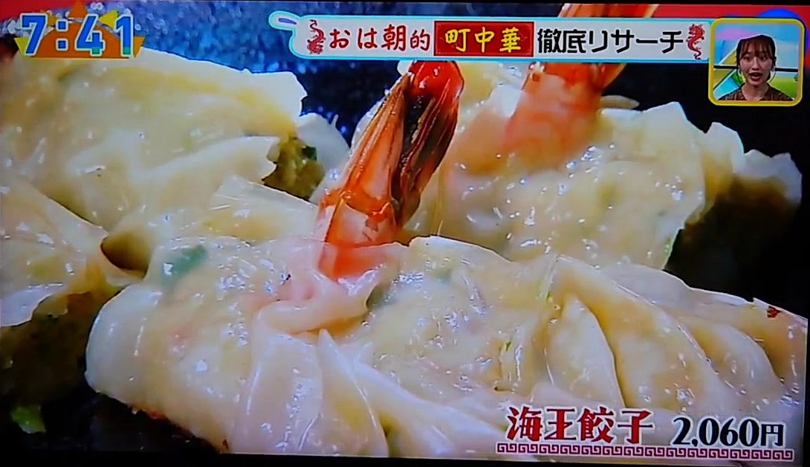
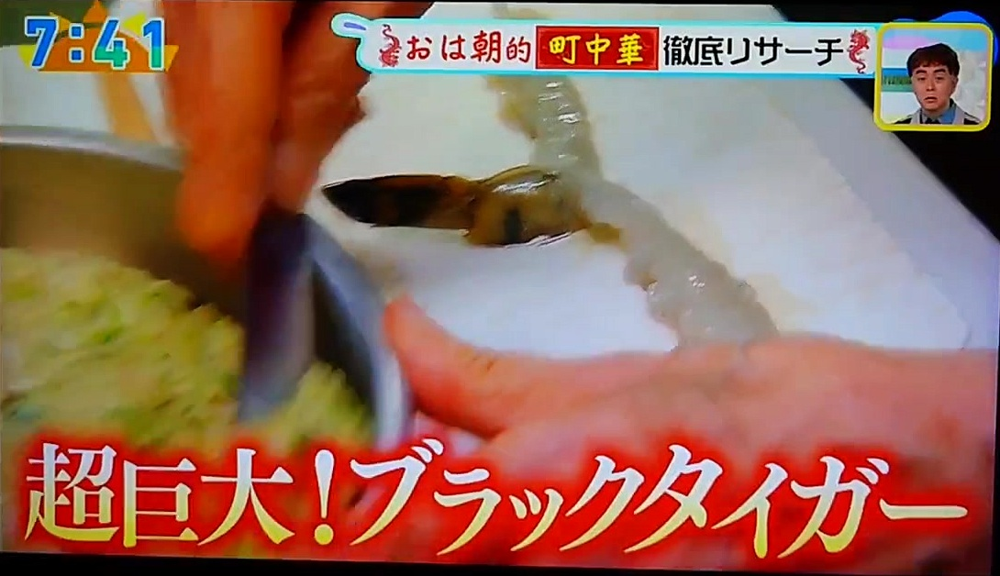
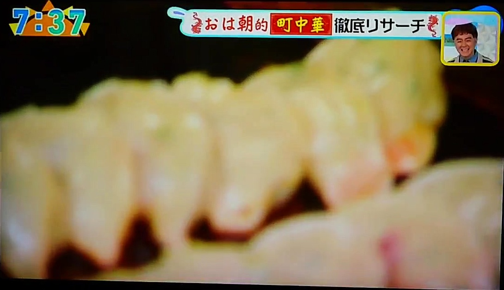
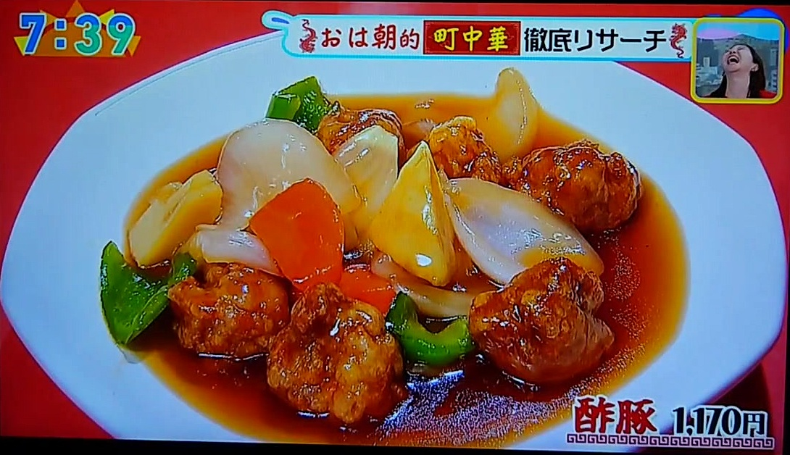
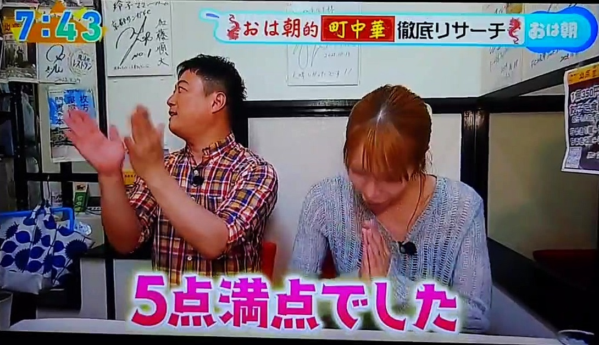

【メディア掲載】「おはよう朝日です」で当店をご紹介いただきました ─ 看板の特大「海王餃子」が5点満点
このたび、朝日放送テレビ「おはよう朝日です」の人気コーナー 「おは朝的 町中華 徹底リサーチ」にて、 大阪・枚方の「海鮮餃子 北京（ペキン）」をご紹介いただきました。 リポーターの小嶋花梨さんにご来店いただき、看板の特大「海王餃子」をはじめ、名物の数々を取材いただきました。

看板の特大「海王餃子」（2,060円）
番組で大きく取り上げられたのが、当店の看板商品「海王餃子」。普通の餃子およそ10個分という特大サイズで、 中には超巨大なブラックタイガーがまるごと1匹。端までエビが行きわたるよう、一つひとつ手作業で包んでいます。 包むのにも熟練の技が必要な、店自慢の一皿です。

海鮮の旨みと甘み ─ 素材へのこだわり

店名を冠する海鮮餃子は、香りの高い国産の大葉と貝柱で、海鮮の甘みをぐっと引き立てた一品。 やわらかく仕上げているので、お子さまからご年配の方まで召し上がっていただけます。
酢豚など、どの一皿もこだわり満載

餃子だけでなく、酢豚や唐揚げなど、どの一皿にも同じ想いを込めています。 出演者の皆さまからも「おいしい」「全部がおいしい」と嬉しいお声をいただきました。
リポーター・小嶋花梨さんの評価は、堂々の5点満点

取材いただいた小嶋花梨さんからは、5点満点の高評価をいただきました。 スタッフ一同、これからも一皿ごとに想いを込めてお出ししてまいります。
ご来店、そして全国へお取り寄せ
テレビでご紹介いただいた味は、ご来店はもちろん、ご自宅でも。 海鮮餃子・たこ餃子をはじめとする名物の数々を、冷凍で全国にお届けしています。贈り物にも喜ばれています。
- ご来店・ご予約・店舗情報：https://www.gyozapekin.com/hirakata
- 全国お取り寄せ（通販）：ホームページのお取り寄せページよりどうぞ
海鮮餃子 北京（ペキン）｜大阪・枚方
※掲載：朝日放送テレビ「おはよう朝日です」2026年6月2日放送